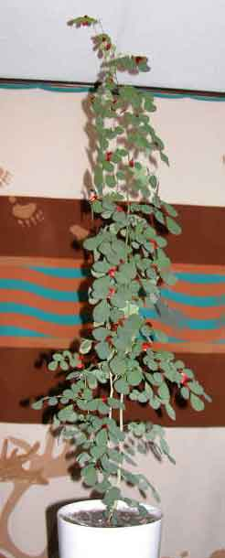

AlaskaStories.com
Stories 7...
Page contents:
Still on another escape: kayaking, story continued
Typical morning: road trip
Delhi Catacombs: society
Raven story: mind of a raven
Merry Christmas: 2003 Christmas form
letter
Dog Booties: Ah, society, maybe
Moose again: hunting
Merry Christmas: 2004 Christmas form
letter
And this aint no bullshit...
Still on another escape
Back there in Stories 6 we left off the kayaking story on the way to Sitka, with the baidarka and the babe from the city.
There we were mind you, and it was desperate indeed, albeit as usual. The Canooks in the baidarka could not give away the adventure woman to any fisherman, so it was to be the long haul to Sitka. I was stuck with them, and they with me, because our kayaks traveled the same speed, and we each knew how to find the best adventure in view so we both ended up there. Worked out rather well. My high-tech mountain camping style and their low tech beach style complemented each other, and the city girl was a pleasant addition to the adventure, despite the grumbling baidarka chaps, typical adventure sorts void of social refinements, who had only agreed to take her as far as the hot springs.
It was a pleasant few days, mostly on an inside channel, and there were no outrageous, near-death experiences, except a few I already told about in the previous stories. The other stories on the stretch to Sitka were just those boring old stories about beautiful campsites, stunning scenery, calm water, wildlife, spectacular sunsets, nice fireside story telling on beaches, succulent cooking, and all that crap you can read in all the sanitized foo foo adventure magazines. Those magazines edit out the real stuff and leave only the pristine wilderness coastline portrayed as effervescing with the fresh organic aroma of rotting seaweed.
We arrived near the ferry terminal ten miles north of Sitka, at a bouldery spot on the shore, at the bottom of the near-vertical bank, below the road, where there was no trail up through the impenetrable thicket. The baidarka sorts paddled for the first rock, a precarious spot, and let the babe off. he was an entirely practical thing, but he did define the nature of true adventurers, who are wisely avoided by thinking females. She would be able to hitch hike into down within minutes, while we would only arrive the next day, because he was late and Sitka still 10 miles of paddling ahead.
The deal was, we would find her in town the next day, and she would buy us a pizza.
Next day around noon, we arrived in the small boat harbor. We tied up our kayak and baidarka in a vacant slip, hoping the slip owner would be out fishing for a few days, or at least be amused to arrive back and see that he had been displaced by kayaks. First thing we did was walk past some fishermen deep in conversation, standing at the edge of the wharf, looking at the water. There was something odd about the scene, and I almost looked away before I recognized that they were looking at the top of a mast, sticking out of the water. Apparently, that is why boats have masts, to mark their position when they sink during the night. I was learning a lot about boats.
We inquired about a girl who might be hitch hiking at the wharf, as we walked past a boat with a fisherman on it. Of course, he said. She arrived at the wharf the previous night. One of the boats was leaving in the morning, and she was on it. They left a few hours ago, and were heading south. Word gets out fast when a babe shows up on the wharf, hitch hiking on boats. So much for the pizza. Not all investments pay.
We did town that day, to restock the wine hold. That night was a different matter. We were doing the town scene late, and there were no convenient camp spots for our sorts right there at the fishing boat harbor. A few inquiries resulted in being told about a fishing boat someone was working on. We could sleep on the deck. The owner would not mind. We looked at the disarray of boards, plywood and tools on what may have been a boat hull. The drizzle was steady. I looked a few slips over, where the boat mast was still sticking up out of the water. The Canooks said they would chance it, propped up some plywood to make a roof of sorts, and spread their sleeping bags on sawdust and nails.
I, resolute adventurer, one with the sea, one with the spirit of the wilderness, one with my kayak, became one with all the stuff in my kayak as I contorted my body among it, on my side, and pulled the spray cover over my head and fastened it tight. That night I distinctly remember the sound of the drizzle on the spray cover against my ear, and a true adventurer's feeling of extreme discomfort. To a passer-by, it was only a kayak with a flat spray cover.
Early in the morning, I awoke. I could not move. Rigor mortise had set in. I was cold, wet, and contorted among unmovable packs, bags, fishing gear and stuff. With all my strength I cracked the lock on each joint, and jerkingly emerged upward, one short painful movement at a time, pushing the spray cover out of the way with my arms and torso. When my head moved to the upright position, an ear full of water drained down through my beard. I slowly looked around.
There in the open window of a nearby boat, a fisherman was sitting, staring at me, his jaw hanging slack, coffee dribbling from the mug he was limply holding. "You didn't sleep in there did you?", he asked. I did not answer. I was still concentrating on moving my neck, and thinking I might next try to move my legs.
The boat where the Canooks slept had not sunk that night. We cooked breakfast on its deck, in the drizzle, and were shortly outta there, heading south, in pursuit of the pizza that was owed to us.
Some of the true and fascinating events along the route are not fully told, because some of you readers have not yet run away from the city to discover the world, and there are things out there quite different from what your government school teachers and officials, and the gullible news journalists they feed, have said when they lie as usual, often ignorant of the fact they are lying because they sincerely believed the lies they were told by their government superiors, rather than asked real questions. The rest of you may guess, and laugh.
Along the way we were paddling among some rocks in choppy outside water, and there were some sea lions ahead of us, some in the water, and some on the rocks. One monstrous bull sat silhouetted on the highest rock, watching our approach. We would be passing close. I remembered the time a friend invited me to paddle her out to a sea lion rookery on an island, for some sea lion pictures. Near the island we encountered a flock, or pod, or gaggle of the lions playing in the water, and my friend asked me to paddle closer so she could take some pictures. She was in the kayak front seat. She had her camera pointed at the sea lions, taking pictures. I paddled straight into the group. I distinctly remember the look on her face when she looked up from behind the viewfinder, suddenly turned to me and exclaimed that we were too close, and that sea lions sometimes get aggressive. Too late, they were on both sides of us. Knowledge is learned slowly. But that lot was playful, and let us pass as they watched us at paddle length. My friend said she figured it out when she attempted to zoom the telephoto lens back in, and discovered that it was already on wide angle.
Knowing the best defense against grizzly bears, the ability to run faster than your partner, I simply dropped behind the baidarka a ways, and stayed the course. All was well, and we were shortly among the sea lions. But then the patriarch came down off his thrown, and all was not well. I was backpaddling the moment he started down the rock, and mentioned to the Canooks that this would be a good time to backpaddle. The bull hit the water with a splash that caught their attention. When that bull emerged, paddles were flailing wildly, trying to backpaddle, turn and go anywhere fast. The wisdom of my placing the larger baidarka between me and that bull was profoundly evident. We survived. The bull lion is still telling the story about the expression on the faces of the kayakers.
I hope I did not mention this event in another story, but we were again on the outside, with no protection against the swells, and of course the wind picked up while we were crossing a bay entrance. In fact it picked up a bit much, and we were under full sail. We looked ahead at the rocks at the far south point of the bay entrance. We were nearing a decision point where we would have to head frightfully out to sea to avoid a string of rocks extending toward Japan, or cut inside to what appeared to maybe be a slot between the rocks. We shouted back and forth, and decided that we would rather die on the rocks than be washed up on a Japanese shore. Left rudder.
As we neared the rocks we saw that luck was with us. There was a slot between the high shore cliff and the first rock pillar. We were full downwind fighting to keep the kayaks in harmony with the heavy water. The smooth water beyond the protection of a large kelp bed lured us. Large enough kelp beds flatten swells. But as chance would have it, the last swell hitting the thick kelp plunged the bow of my kayak down into the kelp. Oh shit.
The kelp stops the swells, but not the wind. My kayak was traveling at full speed under full sail, and the bow grabbed a bull kelp. Kelp are organic cables securely attached to the planet at the bottom of the ocean. A large one was suddenly looped over my kayak bow. The kayak stopped, and started to shudder. The sail stretched. The kelp inched toward me, and slowly began to slip from one side of the deck to the other. The forces built exponentially in perhaps three seconds, and then that bull kelp shot sideways across the deck with a spray of water so fast I was not sure that the event took place. The head and frawns of the kelp zipped past in a blur of water mist. The kayak bow popped back up above water, as it lurched forward, skittering over the kelp. I saw the baidarka breach the kelp bed at the same time, and we were suddenly in smooth water. But the wind was even stronger, funneled toward the slot between high rock walls.
Things were strange. We were heading into the comfortably wide slot, on glass-smooth water, but I could see the stitching spread in my sail. I looked down at the glassy water, casually put my fingers into it, and damn near broke every knuckle in my right hand as it was slapped back against the side of my kayak. There was no noticeable wake off the bow because the kayak was skittering on top of the water. The already intense wind was being compressed between the rocks, and did not want to be slowed by a couple of kayaks. Abject fear. We were inside a new experience, moving fast, and afraid to move a muscle, or the rudder. The seams in the sail were fully parted, with an exposed lacing of thread searching for a weak fiber. I anticipated seeing the sail explode into ribbons. It was a few long minutes that we skittered over the water, as the rock walls slipped past us. I breathed again when we hit the roiling turbulent water and froth on the other side, as the wind spread back out beyond the rocks. We again fought more familiar forces that were only seeking to roll us up into splinters.
I was later told that at somewhere over a hundred miles an hour, the wind will blow the water glass smooth in certain conditions. It is apparently true. It is not a comfortable place in a kayak under full sail. Some of the sea kayakers who disappear in Alaska, are rumored to have sailed into calm looking water.
By and by, somewhere down the coast, after a few other adventures, and a few days, another little wind scared us into a less than ideal, small bay, with no real protection, but a stream for drinking water. We were unable to paddle or sail against the wind to get around the next rocks anyway, so we were blown into the bay. We camped to wait out the storm. And we camped. And we camped. Once we attempted to leave the bay, to be blown back onto the beach. One day I went out and caught a halibut that pulled me most of the way back to camp before I got he into the kayak. The wine larder was low, but we had fresh seafood. The baidarka guys were seafood chefs surpassing even my own superlative talents unchallenged on my normal solo trips.
In abject boredom while milling about on the wilderness beach, watching the wind blow into our face, we collected over a hundred of those small styrofoam oval fishing net floats, of varied colors, and strung them end to end on a cord, and climbed a large spruce tree, to hang the string of floats down along the tree trunk. We were environmental sculpture artists. We knew that no one else would ever attempt to stop or camp on that unprotected beach back in an open rocky bay, and thus knew that we were the exclusive audience for our sculpture. Of course, years later, that sculpture entered someone else's story that showed up in Fairbanks.
On day four the storm was worse, but our boredom level reached force five, and we set straight out into the curling lips of the swells. We figured that we would get around the south point of rocks, and scurry back into the next bay that looked better on the map. Scared the bejeezus out of ourselves getting around those rocks, and then saw no respite ahead. We were stuck in the middle of it again, as usual. The wind was at our backs, and too strong to set sail. We paddled to keep the kayaks in line with the wind, pointed south, and were blown along at an expeditious clip. The next two bays offered no respite, and we were shortly moving along the rocks of the south tip of Baranof Island. At the tip of the island, we faced open ocean, strong, unknown currents, and the wind was taking us into it. It is Cape Ommany, a fearsome place about which fearsome stories are told.
The last jagged rock slipped by on the left. We pushed left rudder, and came around to head back up the east side of Baranof. There was one fishing boat not far out beyond the point, toiling in the rough water. Most puzzling, but welcome, the wind suddenly stopped, and as quickly, blew in the opposite direction, toward our destination. We set sail.
We sailed right into the harbor of Port Alexander. Cute little place. Approaching the small wharf, I saw someone on the porch of the nearby store, wave, and walk toward the wharf. Odd. On my long list of worldly colleagues, few of whom would admit to any knowledge of me, I knew no one in this part of the world, and the Canooks just shrugged their shoulders. About the time we got out of the kayaks, there was the adventure woman, of course. First she explained that there was no pizza place in Port Alexander, and just one small store with a few basic food items, about to close for the day, but they would stay open for us.
Then she told about getting a ride on a questionable boat whose fog horn and radar did not work, among other things, being caught in pea soup fog, almost ramming another boat which then guided them most of the way down the coast. She got to Port Alexander just when the usual stinking government thugs arrested a small skiff fisherman there, under a new law that reserved all the fish in certain vast areas for the larger fishing boats whose lobbyists put more dollar bills in the pockets of the incessantly crooked Alaska governor, as usual. Fish are big bucks, and the big commercial fishing boats resent the common folk with smaller boats, catching fish, if you can imagine such a radical concept. The city girl had been a legal secretary in New York. Bingo. The government drones had not expected a skiff guy out at a remote location to be able to get access to knowledge of the law, for what the government thugs anticipated was their intimidation case to scare all the other small skiff fishermen out of their livelihood. She was busy with the case. She did not even have time to maybe make a pizza for us.
During that time, while we were standing on the wharf, if I did not mention this event in another story, hopefully told the same way, an old fisherman had motored his fishing boat into the harbor, and tied up on the wharf. He fussed with all his rigging, picked up a bucket with a few fish, and walked by us, turning to look at us, and say: "Strangest thing I have ever seen. You boys came around the Cape, turned, and the wind shifted 180 degrees. Never seen anything like it." And he walked on up the wharf.
Then the boat hitch hiking babe told us that there was no camping place anywhere on the scrappy land around the shallow bay. The place was covered with devil's club and other inhospitable brush. We would have to paddle back out of the bay to an outside beach if we wanted to camp. And then she told us that there was no liquor store in town.
The latter data point left us hastily buying more provisions, and getting on our way to minimize the total number of days we would be bereft of liquid spirits.
She said she would try to meet us in Juneau, to buy that pizza. We were headed for Petersburg or Ketchikan.
We made it up the east coast of Baranof a ways, in protected waters, no swells, only treacherous riptides at the bay points. We camped. Not an ideal camp, but another gourmet meal and a bonfire of drift wood. The morning was less comfortable. We would cross Lynn canal, starting the moment the tidal current turned in our favor going up canal, with the wind. We were hoping the wind did not shift against the current. A bit of a crossing. Lynn canal has a reputation, especially down near its open end. We tried to sail, but were only blown up canal rather than cross canal. We could not tack with heavy swells pushing out bows off course. We belatedly took down the sails and resigned ourselves to a long paddle in increasingly heavy water and side-wind.
You will know the joy of reaching shore after many hours of paddling a kayak in rough water, when you do. We did. Whew.
Pink Cove is not named on the map. It is small, and not noticeable, fortunately. Its cozy little beach is pink, made of millions of small clean pink shell bits. You will put your tent on them. Then you will float your kayak back out in the small bay, and catch all the crab you can possibly eat, and a few more. Then you will sit on the idyllic beach, cook crab, eat crab until you can eat no more, eat some more, drink wine, tell stories, eat crab, and get up about noon the next day, and eat more crab. About 4:PM you will slowly load the kayaks, paddle out around the corner, see another ideal camping beach, pull over, set up camp, and keep eating crab. Some days the obstacles are overwhelming.
Events happened, and we survived them because we were on the inside waters, well protected from perils not of our own making, but desperately low on wine. We had to wait for the flusher coming through Rocky Pass in Keku Strait. We reached a particular point, sat in our kayaks, and debated Petersburg or Ketchikan. The quest for all knowledge suggested that we send one expeditionary force to scout each place. The Klepper kayak was dispatched to Petersburg, and the baidarka dispatched to Ketchikan. Never saw each other again. We are not sure that each other survived. Some of the people who disappeared in Alaska, divided their party and set out in different directions. Sea kayaking is not for the faint. There are forces under the surface, that sometime emerge.
I survived the game of chicken with the ferry in the narrow strait south of Petersburg.
Oh, ah, upon eventually passing through Juneau, after doing Petersburg, on the way back to Fairbanks, there was the adventure babe, walking down a Juneau sidewalk. The skiff fisherman was linked up with a lawyer, and they were winning the case against the rotting government drones, despite the lawyer. But I was shortly on the way to the airport. It was too late to get a pizza before my flight. The Canooks were in Ketchikan, still heading south, to Canooka.
Oh, ah, a few weeks later I walked into the Howlin Dog in Fairbanks, that is, over the hill at Fox. There was the babe. I got the pizza. The Canook baidarka guys who did all the paddling, are still looking for her. If you meet them somewhere on a beach or in the woods, the trail starts in Fairbanks, but I dunno where it goes from there.
Typical winter morning
There I was, mind you, and it was desperate indeed, albeit as usual back there in the desperate times, before global warming, when things were a bit nippy in winter. And all this was just to get to work, or so it is ascribed on this old story I wrote back before the internet. I just found it in one of the old cardboard boxes in the shed, along with a stash of varied seeds that some squirrel put there, probably back then, from the looks of it.
This is a plain old boring factual account of a typical winter morning event for many common folks in Fairbanks. If you wanted to read something beyond the ordinary, ah, maybe later.
It was another crisp winter morning, 7:AM, beautiful, with the sun glimmering off the white glacier ice of the towering Alaska Range mountains, perhaps a few hours later when the sun got somewhere near Alaska, and then only on the other side of the mountains, the south side, far from Fairbanks. Even if it were daylight, instead of as dark as an Alaska winter night, the sun would not penetrate the thick ice fog hanging over the flats. I was zipping off to work again, or maybe some other adventure. I could have actually had a real paying job back then, unlike the desperate times of today, writing these words for ah, ah, no avail.
The thermometer stood at 50 degrees below zero, on the arbitrary Fahrenheit scale, but it was only 40 below in the warmer areas in the hills, where you have to pay higher rent. My old jeep engine and battery had been plugged in for a few hours, sucking up expensive electrical energy, so they were ready to rip, somewhat. It was a jeep. That explains much, but it was not unlike most cars of we common folk. I scraped the hard frost off the windows, on the inside, muttering about having forgotten to put plastic frost guards on the windows before winter. Too late. The frost was more like a hard smear of ice, and came off begrudgingly. I was often tempted to chip it off. The vinyl plastic seat cover was as hard and cold as the granite on the north face of Mt. Moffit.
I laboriously moved the gear shift through all the gears a few times to force a path through the frozen grease. I began the ritual with the gas pedal, appearing not unlike the footwork of a Russian folk dancer, as I turned the ignition key, and carefully evaluated the temperament of the engine by the sound of its begrudging efforts, angered by the efforts of the starter. The crankshaft turned slowly though the thick cold oil. The battery indicated the limited work it would offer if the engine would not cooperate. I tapped the dashboard a few times, and mumbled some secret, sometimes unrepeatable incantations, and the ritual built in tempo as I pumped the gas pedal in harmony with my now slapping the dashboard.
After awhile, by then pounding the dashboard, the engine consented to run on its own, for awhile, in fits and spurts, then died. A few more tries, playing the gas pedal with the dexterity of a ballet dancer, now pounding the steering wheel, and the engine was humming, or perhaps grumbling along. I put a heavy tool box against the gas pedal, and stepped out to unplug from the wall socket, stuffing the stiff extension cord behind the grill. The cardboard that covered the radiator to block the air flow, rattled against it, with the fan's futile attempt to move air, making the engine sound even worse. The St. Pauli Girl on the poster taped to the cardboard smiled at me, but the steins of beer in her hand were frozen solid. Some people just take the fan blade off for the winter. Cooling the engine is not on the list of priorities.
I was ready to drive.
The thick cloud of frozen white exhaust hung around the back of the jeep, unable to move the thick ice fog anywhere, reducing the view to the rear, to zero. There was not supposed to be anything behind me, hopefully. I started rocking the jeep back and forth, to limber the frozen tire rubber a bit, but it would require a half mile of thumping down the road before the frozen flat spots on the bottoms of the tires would get round again. The grease in the gears had to be moved a bit more. It helps to have four wheel drive just to get the grease out of the way of the gears, so the vehicle can get moving on level ground.
Time to back up.
No matter how sure you are that nothing is behind you, and the chances are slim that someone might have just driven up behind you, you are uneasy until you've driven through your exhaust cloud, and can see the area behind you, or just hit the snow bank. A raven, his whiskers covered in white frost from his breathing, accenting his black feathers, sat on the top of an adjacent power pole, hoping something edible would wander through the ice fog, and get run over.
I shifted gears, and laboriously turned the steering wheel. I could only get it turned a little bit, so it took a couple more back and forth's, but I finally got pointed out the driveway, moving with difficulty, a bit exhausted from the effort. That is when you start noticing the slow thump, thump, thump of the flat spots on the tires.
I paused at the end of the driveway, to scrape the accumulating frost from the inside of the windows again, as my breath made more frost almost as fast I scraped it off. The blast of icy air from the defrost vent blew the just-scraped frost into my face, adding a bit of zest to my already delightful morning outlook. It would be awhile before warm air came out of the thing.
I got the jeep up to second gear as I proceeded on to the first intersection, and felt the more rapid thump, thump, thump, thump of the tires. Scrape the windows again. Another frosted raven sat on the power pole at the intersection, or perhaps the same one, following me.
Now I had to turn onto a road with other traffic, in thick ice fog. This requires planning. You wait for a clear stretch, mostly just hoping that it is clear, because you can't see squat through the ice fog. You turn wide, not by choice, using all your strength to turn the steering wheel part way at a time. You try third gear, but have to go back to second gear. A car appears from nowhere, and zips past. He would have been irritated, if he had not gone through the same ritual earlier. The people with garages see you, and are reminded of why they work so hard to earn money to build and heat their garage.
I chugged down the road, my cloud of white exhaust adding to the ice fog, further reducing visibility on the road. By the time you see lights in your rear view mirror, the car is along side of you, passing. The engine is drinking gas as fast as it can to move the frozen grease in the bearings, and also move the wheels. By now the thumpity thumpity thumpity is starting to even-out as the tires become nearly round. The thumpity thumpity phase is also when the rattling is most noticeable. The frequency of the vibration combined with the contraction of steel at those temperatures creates the most extensive separation of parts. And they tend to stay separated. Each winter produces a new crop of rattley cars. I got up to third gear. My hands, in mittens, were near freezing, from gripping the frozen steering wheel. You still scrape the window ever couple minutes, and see other drivers doing the same as they pass you.
I was scraping the side window, to see the rear view mirror, when I looked up and saw a moose trot out of someone's yard, onto the road. In the summer I would have hit the brakes, but at 50 below I only took my foot off the gas, and the frozen grease immediately slowed the jeep. The moose paused, looked disgusted at the traffic, and continued across the road to some black spruce.
About the time you are moving along like the cars that passed you, peering through the ice fog, you notice the other slightly denser clouds of white exhaust drifting into the ice fog in front of you, at close range. Somewhere in the cloud is a car with a driver straining at the frozen steering wheel, scraping the frost off the window.
But that was then. These days the winters are warm. The ice fog is not quite that thick. But next the winters will be cold again. Global cooling can happen fast. That is when it will be desperate indeed.
Delhi Catacombs
There I was, mind you, and it was desperate indeed, albeit as usual. The rats, in single file, on each side of me, and above my head, walked along at my same slow pace, watching me, occasionally stopping to stroke their whiskers and comment among themselves, apparently about me. This was their domain, and I was the show. When the rats are following you, it is desperate.
If you thought for a moment that we could finally get back to an Alaska mountain climbing story, you are to be rewarded, albeit with such scant reference to climbing and Alaska that a climber would just blow this story off and go climbing. Come to think of it, he or she would anyway.
I was in Delhi India representing the prestigious mountain climbers of the prestigious Alaskan Alpine Club at the prestigious meeting of the prestigious International Union of Alpinist Associations. That's it. That is the sum total association of this story with Alaska or mountain climbing. Now, back to the rats.
Oh, I might also mention, for those who understand the more subtle nuances of the vibrational energy than travels with things thought to be inanimate, by the less observant, that my arrival at Delhi was preceded by the stop-over at the Bangkok airport. Be mindful that this was back in the early nineties, or some such number, back before everyone without a government job was suddenly suspected to be a suspected terrorist, but things were developing in that direction. The power structures needed a new enemy because the illusion of the evil communists was evaporating. Shortly before the airplane was to take off from Bangkok, I was asked to accompany a police officer back off the jet, and taken down onto the tarmac under the airplane, where two Army chaps suddenly appeared, one with a sub machine gun, and the other with a shotgun, and their fingers were on the triggers. I notice those things. Three back packs were laying on the concrete. I was asked to identify mine. I was never so glad to say that none of them were mine, and vaguely did not care if that was the case because my pack had been lost. I was errant to think that vague thought.
I arrived at the Delhi airport. Of course Air India had expropriated my luggage. That is why they bring you to Delhi, for your luggage.
The conveyor belt had shut down. People had walked away. That sinking feeling of lost luggage had sunk in, albeit as common as sunset. First, of course, no one will tell you where to fill out the lost luggage forms. You wander aimlessly among the airline counters. The counter people know the game, and will not tell you what it is. They all wave you to a nebulous area that changes each time you ask.
But all things come to those who are patient. You eventually bump into a little sign that says, Lost Baggage Claim, with an arrow pointing to a nearby door opening to the outside of the building. You just naturally walk out the door. Mistake. Mistake. Mistake.
Do not leave the airport building. Sleep there, or just buy a ticket to leave, and leave. Forget India. Nothing in India is worth the consequences of walking out that door to find lost baggage, unless your goal is to do the Delhi Airport lost luggage adventure. If you walk outside the building, you will not be allowed back in. Memorize that. Without a ticket for a flight leaving that day, you will be shot by the Army guards before you are allowed back into the building to talk to the airline folks about your lost luggage.
The system is highly refined, from centuries of Indians expropriating the luggage of travelers, and selling it back to them. The system is run by the rats. They administer all the lost luggage.
Outside the building, with no possible way to get back in, and no further signs indicating any lost baggage claim area, you start asking questions about the lost baggage area. You will be waved to a nebulous area that changes each time you ask. After cruising the entire terminal front, both levels, a few times, I thought I discovered golden knowledge when someone told me to go to door number 49.
Door number 49 did not exist, and all the other doors where door number 49 was said to be, were locked. They looked like they led to old mechanical rooms, long since abandoned. One had a narrow, dirty window. Inside was a desk, and no people, not even in the corners.
I continued to make the rounds, along both levels in front of the airport terminal building, several times, looking in through the windows, talking to the people at each door or window where a human could be found, and a few passers-by. Nobody will know anything about anything, or will tell you how the system works. They are busy, perhaps trapped in some other type of run-around. I had not yet found the rats, or I would have asked them how the system worked, and the problem would have been solved.
But the references to door number 49 increased. I keep going back to the door with the dirty window and the largest old fashioned padlock that could be forged from iron in India, because that seems to be where door number 49 is supposed to be. I knock on the door. I pound. An ever-present group of peasants sitting around each of the doors, snickers, and talks about the westerner being played for the old door number 49 game. I go back to each of the various people who told me about door number 49, and tell them that no one is in there. They insist that someone is there now, and send me back. So I go back, to the empty room, and again look for any other room with an unlocked door or anyone in it. And so forth, again and again.
After about three hours of patiently analyzing the data, from repetitive experiences in a small area, during which any more rational person would have forever abandoned their luggage and India, much to my amusement and intrigue, the door with the dirty window was suddenly unlocked, and the door was open, and it had a tag hanging from a peg, with the number 49 on it, and there were several people in the room, appearing as though they had been there all day, even though I had looked in the window of that locked door only ten minutes prior, and often in the last three hours.
That is when things became very efficient. I approached the desk, informed them of the problem, described the luggage, presented my papers, watched a flurry of activity, and was told to come back in two days. Next.
By now it was night. The goal was to find a hotel. People who have been to Delhi are already laughing. This being my first time, and I tending to set out on adventures to learn from them, rather than from guide books, I had no idea that I should have just got on any bus, and for 3 rupees (a few cents) I would have arrived anywhere in the city and easily seen an inexpensive hotel. But instead, I made an inquiry at one of the official local transportation windows, where each system to get to a hotel was described in detail. One of the systems somehow seemed to have all the advantages, while the other systems had all the disadvantages. I shoulda known that was the system you would never select.
I took the official government sponsored, police protected taxi service. Hold your laughter.
I was paying extra for a licensed cab with a reputable company, with written record of the trip retained at the airport office, prepaid, with a receipt, whose driver would therefore not take me to some dark alley and extort money from me, and I was paying for the police officer who rode along to guarantee the aforementioned. Somehow the necessity of the police officer did not speak well for the aforementioned. There was the driver, a friend of his, the police officer, and myself, squeezed into the common undersized box with an engine and four wheels.
The drive itself was up to my standards for adventure. It was late at night. We drove very fast, without headlights most of the time. Well, I had done the same myself, when my jeep alternator was not working well so I was conserving my battery. Entirely practical. And I had run the Canadian border a few times, without lights, after the customs station was closed for the night, at certain remote places. The road into Delhi was a different hue of black compared to the surrounding blackness, so lights were not imperative. The driver apparently knew the road well, because we were irradically dodging things, including gaping holes in the pavement, cattle, dogs, ox carts, piles of bricks, and other vehicles zinging past without lights, on both sides of the road, that I only saw as a blur in the dark when we passed them. Anyone else would have to pay extra for that adventure. Come to think of it, I did.
The first indication was when we stopped to let the police officer out, where he lived. It was late at night, and he was going home. The next indication was the paucity of city-like buildings for a trip to what was supposed to be going to a better hotel in Delhi, albeit not too much better. And then we pulled over at a dark spot under some trees at a remote place far from any buildings. That is when my driver and his friend turned to me and informed me that I would have to pay them extra money, no small amount. I informed them that the trip was fully prepaid. They informed me that I would have to pay them extra money or they would let me out there, and that this was a very bad place, very bad, very bad.
That is when I smiled and entertained my good taxi friends with certain Army ranger Vietnam stories which I felt would suitably enlighten them as to the potential yang of their attempted yin. I had not even got to any gory parts before the driver suddenly said we would go straight to the hotel, and hastily drove there in silence. There is always a quandary as to whether to use the old Vietnam stories, the Alaska grizzly bear fighting stories, the Fairbanks bar fighting stories, or just laugh to tears at their first threat. But it helps to first learn how to easily beat the shit out of the type tough guys who are sufficiently lacking in intellectual acumen to threaten the use of force.
Two days later I returned to the Delhi airport, this time on a common bus representing my normal financial stature. Certain that my climbing pack with clothes would never again be seen by humans or other creatures on this planet, I was there just for the entertainment and learning experience, in the morning.
Door number 49 was open, much to my surprise. They greeted me, handed me a stack of papers and sent me to a door around the corner. I entered a bare room with a podium at each corner, and a person standing behind each podium. I was waved to the first podium. I presented the papers. There was much officious shuffling of papers, and shuffling, and shuffling, and shuffling, and very close inspection of the fine print, and then you hand the guy some rupees, and then there is a flurry of rubber stamping, and you are sent to the next podium. Same show. Next podium. Same show. Next podium. Same show. And then a guy appears at the entrance to a hallway in the middle of one wall.
That is the guy who would be in the Hollywood movies if they had real people in some of those shows. He was a wiry little guy, appearing as though he was there long before the airport was there. You did not really look at him. He looked at you, and his gaze stripped you to the bones, and rattled them. No bullshit stories, or real ones, were of any value with this guy. You were not certain if you were more protected than Shiva, with this guy, or if you were about to see your last sight of humans when you entered that hallway. He took the papers, and turned to walk down the hall. I followed, looking back at the diminishing size of the entrance, certain that I could hear my bones rattling with each step.
We descended into the catacombs far under the Delhi airport terminal. It seemed like a very long walk. The hall was narrow. We turned into another hallway, continued to descend, and then slowed. He stopped at the first open door. I peered in. Dozens of beady little rat eyes, from a maze of rows and rows of high shelves, focused on my eyes alone, as though my guide were not there. I did not grasp all that I had seen in the dim light of a few bare bulbs, as I was motioned on to the next door.
We stopped at the next open door, and then the next one, as my guide carefully examined the paperwork, and slowly looked up at the number above the open door of each room. I began to understand what I was seeing in the dim light of the rooms. Millions and millions of dollars worth of luggage was stacked in a jumbled disarray on rows and rows of shelves extending to the top of twelve foot high rooms. There was every shape and manner of luggage, package, container, box and bundle. Some overloaded shelves had collapsed from the weight, spilling into a pile onto the floor, long ago. And the luggage was patrolled by many, many rats, the administrators of the luggage catacombs. The rats kept the tally and inventory.
I was silently waved into the fifth room, and my guide stood at the door. I turned back to him, and he waved in a manner indicating that I should walk down each isle, looking for my luggage. The rats, on both sides of each isle, on each level of shelves, seemed to invite my perusal of their merchandise. The rats followed me, discussing my thoughts.
There was not a hope. Thousands and thousands of pieces of luggage could not have accumulated in those catacombs if anyone had ever found theirs, unless maybe Air India had a contract with all the other airlines, written by the rats.
It came into focus ever so slowly. My pack, with a fat rat sitting on it, smiling.
That pack had been to the summits of Alaska Range mountains, in the winter, some of them having never been prior climbed, and on other trips had carried no few loads of moose meat, caribou and dall sheep, and been on other adventures. Now it had even been to the very bowls of the Delhi Airport catacombs, and survived.
I picked it up, with the gracious permission of the rat seemingly perplexed by the rare event, looking to his colleagues to share his disbelief. My pack had been carefully wrapped with coarse twine, and several documents attached. India developed the bureaucratic system that the United States adopted, twelve people and a dozen rats hired for each one-person job. My pack had been handled by each of them, at least twice.
I smiled as I came to the door, where my guide shuffled the papers, inspected the pack with great care, and turned to escort me back up the halls, out of the catacombs. At the end of the hall he suddenly turned, and accepted his fee with a warm smile as he handed me the papers.
Same room. Same podiums. Same people. Same process. Same shuffling. Same officiously detailed inspection of the fine print. Same payments. Same rubber stamping. Second round. And then there was the beautiful young lady at the exit, at a desk that was not there when I came in. It was to her that I would then pay the official government formally established fee for the recovery of my luggage, mandatory. And she kept the stack of paperwork.
You will have bought your luggage back. Air India. Delhi. But you will have met many fine rats, and paid for a fine adventure, if you have a sense of humor.
Raven Story
There I was mind you, and it was desperate indeed, albeit as usual. The world yet teeters on the very brink of disaster, and the raven tried his best to give me a clue, but I still can't figure it out.
Ravens are as everyone who knows them, describes them, and much more. In the far frozen north, they are the winter bird, their glistening black form is dramatically noticeable against the white snow. And they are as successful as they display, while humans barely eek out an existence, struggling between anguishing decisions, such as which sushi tray to get at the grocery place, for the pot luck party to which you are already late and did not get the pot, ah, the moose roast cooked in time.
The ravens have the humans bring them food. Some of the people routinely forget that the bag of garbage they threw in the back of their pickup, and then forgot to put in the dumpster on the way to work, is going to be thoroughly spread out in the bed of the pickup, and high-graded by the ravens. Other people just separate the food and leave it in the open for the ravens to clean up. Less mess.
The town ravens can often be found at their favorite drive-in fast food joint. They know where to sit and stare at the humans, so the chicken skin and other such morsels get tossed out the window as the car drives from the parking lot.
So my friends often tell me about the book, Mind Of The Raven, by some author. I would remember his name if he were a raven, but he is just a human, and there are 6.4 billion of them, each with names, often the same name. And they all look alike, and act alike. And besides, I cannot bring myself to read a book. Too many words. But if one were written by a raven, I would read it. The Mind Of The Raven is apparently a book you will tell all your friends to read.
So when I tell the raven story, I am told I should tell more people. So you just gotta put up with this story even though there are no fast car chase scenes, no explosions, or ocean swells crashing against the sea cliffs. It did not even happen in Alaska, but ravens are in Alaska. Close enough.
I was a kid, back in 06, or maybe 66, one of those numbers. There are a lot of numbers. Hard to keep track of them all. I was the food slave for a raven associate I acquired from a nest, back before you could be arrested for not being a government drone if you did what humans are designed to do. The raven flew free, and just knew where food was more convenient, and who was more fun to play with. This was in the State of Washington.
Among all the other stories, too many to tell, on occasion I would be sitting on the lawn, tossing small objects for the raven to retrieve. It took some of them where it preferred. The raven was fond of quarters, which I had to later retrieve on account as they were real silver and worth a quarter back then, before government replaced them with plated copper to further rip off the people for the insatiable greed of mental midget government drones who could never survive among humans if they could not lie, cheat, steal and kill. But the raven would always return something of some comparable form, and present it with motions indicating that it was asking for my approval.
And at those times, if I laid down on the lawn, the raven would hop up close to my face, intently look into my eyes, then hop to one side, and ever so very carefully, slowly put the tip of its beak into my ear, and then very quietly speak the most intriguing and varied words I have ever heard from man or beast. And then it would hop back in front of my face, and intently look into my eyes. And then it would do that again, several times.
The raven knew what the human ear was for, that it was delicate, knew the volume of sound to speak close to the ear, knew an astonishing variety of coordinated tonal sounds, and knew that eyes were also useful for ascertaining communication. This happened on several occasions. The raven was making a knowledgeable effort to educate a typically idiot human.
But what can you expect from some dumb-assed teenage human? I tried to mimic the raven sounds and whatever else, to no discernible avail. The raven no doubt eventually learned that humans are hopelessly stupid.
There are other raven stories. I have watched ravens in Alaska do things that display an understanding of humans beyond that of most humans, and of course further beyond the poor sad self-stagnated minds of government dolts and the pitiable minions who respect them.
There is much going on in the world, and humans are the least of it, but they are the best entertainment.
Now back to whatever else next crops up on this illusion of excited ions. Stop wasting your time with the words of humans. Look to the ravens, and let me know what you learn.
Merry Christmas, 2003, Merry Christmas, LAST YEAR, Merry Christmas... (with pics, if you can imagine such an advancement)

Quick, I gotta knock out the annual Christmas form letter to all the relatives, friends, other fellow humans, and also the ravens, rats and mountain climbers.
Some people considered the annual Christmas form letter, copied on a xerox machine, to be a crass, impersonal and insulting deterioration of personal communication standards in our society. Now, it is a warm personal communication and delight to receive in the mail, compared to these sorts who just upload the thing onto a website, and send out an email notice of the posting. And in a few years, with the emerging technology, this will be a warm personal communication and delight to read compared to the next transformation. These unpredictable humans keep escaping into the future despite the best efforts of the legions of government and institutional anchor-throwers.
So you can be ever so delighted to read this, and be ahead of the crowd.
2003 was such a wonderful year, and all that rhetorical bovine scat. Fill in any rhetoric I missed.
Be glad you are reading this on a screen. I opened an annual Christmas form letter a few days ago, and a whole hand full of that foofoo Christmas spirit glitter stuff spilled out onto the carpet. Granted, it was a good excuse to do the annual vacuuming of my room, but I did not do it right away, and there is still glitter stuff sparkling down the hallway, to the refrigerator door in the kitchen.
The year was highlighted by a series of profoundly boring activities, to rival the best of what is traditional for annual Christmas form letters, and beat the competition, such as what you are reading. Everybody else is leading exiting lives, and I am still trying to hack-saw through this hardened steel chain between my wrist and the keyboard.
I did however successfully facilitate the arrival of three cygnet Trumpeter swans at a water-filled gravel pit in the State of Washington, the account of which is in the link about the lake, that I added to the links page of this website. More people will now get to see beautiful swans. Way cool.
Finished a few art projects, about as few as can be finished, but I started several. The large black palm picture frame is high on the list of things to do as soon as I mount my new picture frame vise to a piece of plywood the moment I hit the upload button for this Merry Christmas form letter. Hmmmm, that is, if the black palm boards get here today. Pricey stuff that black palm, but beautiful and fascinating wood.
I cobbled together, then uploaded and mailed a modicum of socially responsible rabble rousing, trouble causing, arm waving and general carrying on, albeit as usual, ragging my dear and benevolent friends and colleagues, the poor sad pitiable little mental midget government drones whose insatiable craving to spew grief on humans wherever the government bureaucrats, police, prosecutors, judges and military thugs can lie, cheat, steal, imprison and kill their way through their useless lives, is boundless, or something like that, much to the amusement of observers. Well, ragging malicious government dolts beats fishing. Eventually the oceans will run out of fish, and then where will your fishing skills leave you? But power-damaged minds will always entertain humans as long as the concept of power frolics in the minds of its victims. To their dying day they will still flawlessly believe that they must make your decisions for you, and force their idiot decisions onto you, to reduce the spectacular diversity of the human phenomenon down to the pitiably stagnant Neanderthal illusions of the government thimble minds, especially now that you are all suspected terrorists, not just liberal drug dealers and conservative gun runners. And I laughed to tears doing just that. These humans are the best show on the rock. If the government sorts did not endlessly fabricate enemies to attack, usually their own citizens, they would have to get a job doing something useful for society.
In the festive Christmas spirit, for the first time ever, I am begrudgingly spending a few paper federal reserve notes, passed-off as money, on electricity to light a few Christmas tree lights that I draped over the spruce trees I planted by the door step, on account as I found a few tangles of those lights in the dumpster after last Christmas, and was anguished that such perfectly good stuff was thrown away. I foolishly failed to recognize that I would be tempted to use them. I gotta remember to give them away to someone after this Christmas, which should be easy to remember when the December electricity bill arrives.
I got the Mpingo tree on the kitchen table decorated like a Christmas tree, with all the little red mylar discs I cut out from the Poinsettia flower pot wrapping last year, and saved. Mpingo, African Blackwood, Dalbergia melanoxylon, black rosewood, scarce, from Tanzania, the Tree of Music, the wood that clarinets are made from. Beautiful light green, lobe shaped leaves. Cool Christmas tree. In fact, that is it in the picture there beside some of these words. Maybe lights next year.
My taste for fine wine has matured throughout year 2003, as I have attended more wine tasting events, especially the one's with free food. This has resulted in my more moderate approach toward wine, on account as the good stuff costs more, so the total volume has proportionally diminished. All things in moderation, is not an expression of wisdom, but an expression of economics science.
OK, that is it. That is the entire year, unless I think of something else and add it later. If there was anything else, like moose hunting and chasing gold and such foolishness, I wrote it in one of the other stories, and you can read it there.
Merry Christmas, Merry Christmas, Merry Christmas.
Oh, and Happy New Year for good grief sakes. Darn near forgot that.
Upload.
OK. I thought of something else to add, on account as it just happened. It is several days later. Well, another traditional Alaska New Years party qualifies for the annual Merry Christmas and Happy New Year message.
I was diligently working on another website, clicking the keyboard just like in the movies with computer geek actors, when a colleague came through the door, darn near fast enough to get shot. I almost thought he was a fed, from all the stumbling around. Ya wanna keep your .44 loaded and the safety off, but be careful. Well, there was a discussion, and I found it prudent to accept the merits of his suggestions. The bell curve for the Fairbanks society is inverted, and I know some of the folks at the tops of the curve.
The possibility of this adventure was possible because I keep my pack packed, for climbing, kayaking, hunting, and a few other things that are probably not legal, depending upon what the feds are outlawing each day in their dying throes of self-destroying, unbridled law writing. There are terrorists out there, you know. They are the ones who cannot be trusted, because they know how to do all the normal things that humans do, that the Americans are no longer able to do because Americans laughably made themselves dependent upon first always getting permission from idiot government bureaucrats who got their job because they were too ignorant of how to do anything out in the real world of human competition. After I went to so darn much trouble to protect the world from those evil Vietnamese commies, the damn terrorists come along to define every previous and current military chap, their relatives, friends, neighbors, and anyone reading this stuff, as suspected terrorists trained in military weapons of destruction threatening the security of our society, if not worse. Those evil-doers are persistent little blithers, and we made the next crop of them, in the Federal Homeland Security Gestapo, to protect them from us, or something like that.
As we went out the door, I raked a section of bottles off the wine shelf, into my pack, along with the .44 caliber corkscrew, because we were heading to a remote cabin over a couple ridges, through the woods, around some corners, down onto a river, and there was rumor of a crowd.
We parked at the top of a local hill, not far from the spot we made the igloo for a Japanese movie several years ago, filmed in the direction away from the trees, that looked like the north coast a lot farther north, and more inconvenient.
I found myself hanging rather desperately onto the back part of a one person snow machine, while my colleague was driving, as we careened across the frozen wasteland. There is an old lesson well known. You do not want to own a yacht. They are too expensive. You want to know someone who owns a yacht, who will invite you on cruises. That is less expensive. Same with snowmachines, but find someone with a two-seat snow machine.
The trip was only desperate as usual. Then we dropped down into the slot through the trees, straight down, except for the short sharp zig-zags to avoid the trees and brush that the trail guys were too lazy to cut or bludgeon into splinters. That is when the adrenaline production suddenly picked up.
My colleague who was driving, considered it an attribute to create adventure with what others, including myself, would describe as reckless lack of respect for his and my life. Snow machining, especially at a fast speed, more so when going down a steep hill, yet more so when making turns, worse when the turns are sharp, on an uneven trail, further made entertaining when dodging tree trunks and branches, requires that the driver and any hapless passenger lean into the turn or to the uphill side of the snow track, for the precise duration of the required force vector, and no more, and still not be hit by the branches, some of them with jagged broken ends resembling what Vietnamese craftsmen often prepared to welcome the American liberators enjoying the wilderness beauty of Vietnam back in a previous time of social enlightenment.
Error could mean an independent trip through the forest, while the snow machine charted its own course on a fall line, at full speed, or getting slapped in the face with branches, some with the aforementioned character, or large dollops of snow from tree branches, encrusting one's face, or instant impact with a tree trunk, or various permutations of the same. And the passenger, me, could not see around the driver, and would not want to try, although I did, for certainty of getting slapped by the branches, as I did, so the whole thing is a crap shoot. Wiser to stay at home with the wine on the shelf.
A couple times the sled we were pulling, with the wine and packs, went flying ahead of us, or so it seemed until I got straightened back around without getting raked off by tree branches. This was not what the snow machine companies advertise on TV, least their liability insurance would skyrocket. There was some testing of inertia, through an obstacle course. Several miles later, at the bottom of the hill, we took a break while I and the driver broke the thick crust of snow from our faces, discovered that it was still daylight, and pushed the throttle to its limit again.
We zinged down the frozen river, closer to the images seen in the TV snow machine advertisements, and were shortly at one of the old river cabins. I may have mentioned that the social bell curve in Fairbanks is inverted. Farther north of Fairbanks, over some ridges, along some rivers, the curve starts and finishes like all the other bell curves, but there are no data points in the middle. You meet the finest people living in the Alaska bush. Be polite, and do not worry about running into those socially unstable, nervous, greedy government sorts who think they own everything, and are too dumb to survive out there in the real world, or otherwise stumble into it and therefore promptly quit their stagnating government job.
These homes and cabins of every sort, are places where people live, visit, work and play, after arriving as described, or by other means often of greater difficulty and adventure. There is no easy way to get there, which is why you meet the finest people there. What would diverse humans, of the sort who unshackle their minds from the suburbs, build and maintain for dwellings, beyond the stagnating grasp of government regulations and social expectations, limited only by their own resources and the difficulties of transporting stuff? The spectrum is magnificent. Along the way, we noticed that one very convenient cabin had gently settled out over the eroded river bank, but froze that winter before it collapsed. The stove pipe was still good if it is recovered before the next spring break-up. The varied structures are old, new, small, large, individual, clustered, in view of the river, hidden back in the trees, artsey, plain utilitarian, barely adequate, more than adequate, and always of intriguing character.
The party started upon our arrival, as was the case upon everyone's arrival, and has not stopped, to my knowledge. There were more dogs in the cabin, than humans, and more humans in the cabin than it was built for, and more dogs around the dog houses outside. Well, some ski-jorers were there. I proceeded to teach the dogs all the bad habits which I and they believe inure to their greater benefit. At night some people slept on the freezing floor while some of the dogs somehow got up on the couches. I was on the floor, and perhaps taught the dogs too much.
As to the matter of the freezing floor, typical of Alaska cabins in the winter, during one night my pleasant dream of Hawaiian beaches was interrupted by a loud WHAP. I laid there, expecting to hear someone stumbling around, after apparently having knocked something heavy from a shelf, but there was only silence. I was shortly asleep, and it then happened again, the same way. I decided I would inquire in the morning, among those equally perplexed but too unconcerned to get up and ask just what in the good grief was happening. Some things just go bump in the night when it is too cold to look for them. I had forgot about it in the morning as I rolled up my sleeping bag, and noticed a wall of frozen sparkling apple cider, with the shattered glass of two bottles, against the side of my bag. We did not need the stuff anyway. It had no alcohol. Do not set the cider on the bottom shelf.
There were the usual dissertations on great and weighty matters of serious consequence, upon which the fate of the world teeters, as usual, laced with fireworks, spectacular culinary productions, a bonfire, choice cigars, expensive wine, cheap rum, home made chocolate liquor, some other things, and a few wild vollies of large caliber shots to celebrate the New Year. The whiskey always tastes better in the bush, if you did not drink it along the way to steady your nerves. It was 38 degrees below zero on the deck in front of the cabin, on top of the rock bluff overlooking the river, with the gray jays sitting in the spruce trees, watching for morsels that might be dropped, while the dogs were doing the same, except for sitting in the trees. The white swath of the river, glowing from the light of the moon, wound through the deep valley of dark green spruce trees. The moon shadows of the trees accented the snow.
Late mornings, due to the sun in the far south not topping the ridge, for months, as a magnificent excuse. Late nights due to the invention of gas lights, and the aforementioned activities. At great effort, an expedition was launched each day, by dog or machine, for some worthy purpose, such as checking the dog trail or snow machine trail, to somewhere in the hills or on the river. Neighbors were encountered, once. Fires on the river were started, to stand around while conversing and eating more food. Those snow machiners make a metal box attached to the hot exhaust pipe under the hood. They, the snow machiners, not the box or exhaust pipe, put foil wrapped steaks, burritos and such epicurinary creations in the hot box. So while we tough guy mountain climber types are hacking away at frozen cheese and sausage for a snack, the snow machiners are munching on piping hot steaks and things. Remember that.
We will overlook the work to cut and split the wood for the barrel stove, and getting up a couple times at night to throw in more wood, and bringing the water from the thawed hole at the otherwise frozen spring or river, and all the other many things that might indicate inconveniences that humans have automated in the big cities, because that might detract from the image of our wild partying. Through it all, the dogs just laid around, were served food, did not have to wash dishes, and were massaged by anyone they stood by. I taught them too much.
The usual spectacular beauty was not photographed because it was just too cold and inconvenient to get the camera out. All the best scenes are not photographed because of the difficulty of doing so, which is why they can only be seen with great difficulty. The picture of the narrow trails between dense spruce trees heavily dolloped with drooping snow and lacy rime would be on the front cover of one of them expensive magazines if I had not been dodging those dollops, often not successfully. I did get some boring convenient pictures, as you can see.
And after a few days, our ration of alcohol and things exhausted, we departed those who stayed with their more ample ration, back up over the ridges, at a saner speed limited by gravity clutching the snow machine sled, but little less control.
And there we jolly well have it for yet another turn of the calendar, and for whatever comes next.
Some of the trees, with the Alaska Range in the far south, mid day.


Carol the ski jorer and adventurer, and a few of the dogs.
Some of the food.
Dog Booties
Shit. Whada ya want? World Peace? Too easy. Anything less, perhaps your rights back from the government dolts? No incentive. Why manifest a design that you have already verified against every question any human mind can ask, including, of course, how to manifest it against every reaction of any human mind? Well?
Too boring. Too many more fun things to do.
There I was, mind you, and if it gets any more desperate that this, just step up to the bar. I will buy the drink.
So I sauntered up to the bar, no few years ago, among my colleagues at the time, at Fort Greely, lost in Alaska, in the dead of winter. We were United States Army tough guys, just like they told us in the TV advertisement recruiting lies they still tell the gullible young American males and the testosterone saturated females foolishly attempting to emulate the idiot males.
We were the elite, in the winter class of the United States Army Northern Warfare Training Center program at Fort Greely, including the Black Rapids training site, lost in Alaska. And by pure chance of the mix at the time, I was of the elite of them, having stumbled through whatever Army illusions described the elite of the mix. If the word, elite, had not been invented, the rhetorical illusions of every military in human history, especially the gullible Americans, would collapse to the reality of idiots. They just tell you that you are the elite. They fail to mention that you are the elite of idiots.
Might you have, by chance, noticed that which distinguishes humans from the other animals? Government swine, their militarily minions, police, lawyers and court judges have not.
Therefore, of course, inherently having to defend my elevated status created by the lies of my superiors of the same ilk, it was incumbent upon me to demonstrate my military prowess among the mere common Army sorts around me.
Having learned the process, from a fellow Army Ranger, at Bao Loc Vietnam, I looked around for a large cockroach running across the floor, so I could grab it, pull the legs off, and swallow it alive.
Alaska. No cockroaches. Not even any snakes to bite the head off and strip the blood into my mouth and its vicinity, another old Army Ranger ploy to impress oneself by causing others to cringe.
Undaunted, and having been in the field for several days, in the dead of winter, at the usual 40 degrees below zero back there before global warming, working hard long hours each day in white rubber, double insulated, water proof Bunny Boots, which froze each night in the tent, rather than drying out, and therefore continuing to ferment with foot sweat each next day, I took off one boot, and set it on the bar, with no small emphasis.
The bar stool on each side of me emptied the moment I took off my boot, and the bar maid stepped back a bit. A perceptible cloud with a light green tinge wafted around the top of the boot, pronouncedly more perceptible to the olfactory senses.
But that is only how the wimps in the Army prove they are tougher than the guy on the next bar stool, and the bar maid.
Crown Royal!
Yes, in the Bunny Boot.
Everyone in the club looked at the bar maid. She looked back at them. A flurry of comments were exchanged.
Hesitant, she poured the whisky, at arm's length.
I promptly drank it.
"It doesn't taste any better than that."
There was no small amount of cringing, related comments, and intense curiosity.
Well, maybe it doesn't taste any better than that. Is there anything more illogical, than whiskey, with which to attack the taste buds? Diluted with a several days of fermented foot sweat, whiskey may be a delightfully peasant experience to the palette.
They and you will never know. That is knowledge privy to only genuine tough guys, Alaskans.
Not to be outdone by myself, and recognizing that writing this story is easier than finding those old climbing stories in cardboard boxes somewhere out in a shed with a full winter snow load on the weak roof, now no few years later, earlier on the evening of my writing these very words, I was among fellow Alaska adventurers, the real elite. Yes, at a party. Yes, wine from distant countries, hand carried to the party. And back to the further defense of my, ah, elite status, I was quick to recognize the potential when the conversation turned to the custom dog booties that a chap among the lot had manufactured for a discerning dog musher, and showed to us.
Yes, they were waterproof.
Yes, you have guessed the conclusion of this story.
Des guys what only drank whiskey from sweaty Bunny Boots aint no real tough guys.
Fine wine. Dog booties.
Okay, so they were new and had not yet seen the foot of a dog. Tell no one. It is hard enough being a tough guy without anyone asking questions. Later I may add some sentences about celebrating at the finish line of the thousand mile Yukon Quest dog sled race, and let the hasty imagination of other tough guys retain my position among the elite.
Moose again, 2004

There I was, mind you, and it was desperate indeed, albeit as usual. Winter was peering over the hills from the north, a gaunt look in its eye, and the larder was getting low.
The desperate part was the extent of the hard boring work, albeit as usual for what is purported to be exciting by dees guys that tell stories.
I set forth on the annual moose chase, amid unsettling circumstances of our times, but with adequate wine of superlative vintage, from the sale bin.
2004 was the year of smoke in Fairbanks Alaska, on account as it was the year that Alaska burned. Forest fires raged across the State. Rain clouds abandoned the usual effort, because there were too few remaining trees to water, leaving it so dry that those remaining few burned.
Smoke confined the visibility in interior Alaska to the front porch. Tourists came, saw smoke, and left. Visibility was so low that most small airplane flights to bush strips were canceled. Hunters who intended to fly into hunting areas, did not go hunting where they preferred to go hunting, if at all.
The glacier rivers were running high, on account of the global (regional) warming thing, enhanced by all the fires heating the air and melting the glaciers at an impressive rate. But the other rivers and creeks were heard to be debating a time-share arrangement, for some summer vacation time from the old water-flow task. What is a creek to do if there is no rain?
 I
set out to a secret place the day it finally rained and the sky
cleared, for a few days before the smoke came back. The secret
place had mostly burned last year, so I was mostly safe from the
fires that were causing major shifts in activities. I took my
kayak, as usual, not certain if there would be enough water in
the creek to float the kayak.
I
set out to a secret place the day it finally rained and the sky
cleared, for a few days before the smoke came back. The secret
place had mostly burned last year, so I was mostly safe from the
fires that were causing major shifts in activities. I took my
kayak, as usual, not certain if there would be enough water in
the creek to float the kayak.
There wasn't.
Undaunted by the dearth of water, and confident that I had enough duct tape on the bottom of my Klepper kayak, I set out dragging my kayak over the wet rocks, through an occasional puddle. And I dragged. And I dragged.
This was once a creek of established reputation. Now beaver dams crossed the entire creek bed, making walls to drag the kayak over, but at least a bit of water on the upside.
My decision to have included the weight of the wine in the kayak was debated at each shallow rocky stretch. Each time I lost the debate against reason, and kept on dragging the heavy kayak, as the beaver, birds and trees mused upon the oddly muttering human dragging a boat over rocks, mumbling something about wine, apparently thinking there might be deeper water around the corner. There wasn't. I should have brought more cigars, and less wine. And the weight of the folding chair was a bit extravagant.
Trees had fallen across the creek, from the high bank side, to the gravel bar side. Which end of the tree to go under or over, at great effort, was a diversion from the debate on the weight of the wine. There was also the weight of the life vest I always take with my kayak, however insignificant, of no utility.
Normally, one would not have continued with such an endeavor, after a short distance. There are just as many moose per acre near the road, as there are far from the road on the first day of moose season, and there were few other hunters in the area, on account as the other hunters figured out that the creeks did not have enough water for their boats.
There were, however, more black bear tracks along the creek,
than I have ever seen on a trip. They were hungry tracks, looking
for my moose. The summer was so dry that the berries, traditional
black bear food, were scant. An occasional wolf track, where wolves
were known to previously be  plentiful,
indicated that the bears had already got most of the moose that
usually feed the wolves.
plentiful,
indicated that the bears had already got most of the moose that
usually feed the wolves.
The eagles, falcons, hawks, owls, ravens, gray jays, ducks, geese and dickey birds watched my passing.
At each rocky riffle where water trickled among the rocks, I debated how far I would have to carry the moose meat on the return effort, and how many such places I was foolishly going beyond. Unloading and loading sacks of meat in a kayak are not the preferred process when the idea is to leisurely float down a creek, but I have done this exercise enough to explain why I often get to where the only other hunters are as addled as I.
There were fewer moose tracks than bear tracks. This was not looking like an auspicious time and place for the old freezer-filling project. Bear meat was beginning to sound good, but those guys are not as gullible as moose, and tend to quietly slink away when a muttering human comes stumbling along dragging a kayak over the wet rocks.
I reached the last riffle of my tolerance, and belatedly camped, comfortable with the knowledge that I had sufficient food, wine and cigars to survive until a moose or bear wandered by. A beaver was miffed with my decision to set up camp in his back yard, and proceeded to disrupt the tranquility by slapping the water with his tail, over and over again, as usual.
It was not so much that I was comfortably sitting in an idyllic camp by a creek of sorts, in the wilderness, surrounded by the golden autumn leaves of an interior Alaska birch forest, accented by green spruce, enjoying fine vintage wine on sale, a truly good cigar someone gave me, and gourmet food of meticulous preparation for its convenience. It was that I was getting rid of some of that weight so I would not have to drag it back over those wet rocks going back down the creek.
The beaver kept slapping the water all night, as they are known to do, but a laughing loon offered a more pleasant sound at times throughout the night, and the next night.
 The
next couple days I wandered around in quest of wily moose tracks.
There were none, and there were more bear tracks. There was no
more water upstream than there was downstream, and the creek was
not rising.
The
next couple days I wandered around in quest of wily moose tracks.
There were none, and there were more bear tracks. There was no
more water upstream than there was downstream, and the creek was
not rising.
I settled in for the patient wait, now concerned that I had not brought enough wine, but I was holding heavy on cigars.
Time passed. There was frost on the tent in the mornings. The campfire was for good purpose. I took camp pictures. I contemplated great and weighty concepts of serious consequence, upon which the world teeters at the very precipice of existence, or something like that. I looked downstream, and upstream, across the creek, and back into the woods. I sat on a nearby small cliff looking down at the creek. I listened to heavy branches breaking as monsters wandered through the trees too dense for me to see what sort of monsters they were. I walked around a corner one day, and stumbled into a moose, and shot it, so I could get this story back to Fairbanks and do something more exciting.
Oh, then I had a kayak full of moose, and entirely too much of that food I brought, including one more bottle of wine that was just too good to not bring back, and a half bottle that I drank on the way, at a lunch spot, exhausted.
So first, upon arriving at a riffle, one pulls the kayak as fast as one can, splashing through the shallow water, so the momentum takes the kayak a few feet more into the rocks covered with not enough water, until just before one thinks that one will rip the bow rope attachment web off the kayak deck. Then one walks back to the bow of the kayak, lifts it and pulls, one tug at a time, until it will not budge any more. Do not let your hands slip, or you will be sitting on your wet bottom in the cold creek, quickly looking around to make sure no one saw you, as the squirrels chatter themselves to tears. Then one goes to the stern of the kayak, braces one's feet, lifts the stern, and pushes, one exhausting push at a time, stopping each time just short of dropping into the water. You can get few more feet that way, sometimes all the way to deeper water, rarely. Then one goes back to the bow, and picks rocks out of the way, placing them to divert water into the path you are preparing. Then back to the stern, and push again.
Then give up, unload the kayak, carry the sacks of meat down creek past the shallow rocky section, leaving just enough meat and stuff in the kayak to make it still miserably heavy and toilsome pushing the kayak over the rocks. Then load it again, and mutter. The muttering is important. A good hunter will practice muttering.
Then keep doing that entirely too many times until you get back to the road, still muttering. If I'd a knowed that it would be that hard, I would have dun the same thing a different way, if I could figure out the different way.
No, I did not take any pictures of the kayak sitting on the wet rocks. I was busy muttering. There were a few sections with water, but no current, for lack of enough water, so the float back down stream required paddling downstream when I was not just wading.
On my list of things to do next year is to just get a job and buy meat at the grocery store. Every time I have hunted the grocery store, I have been successful, at vastly less effort than moose hunting. They even give you a wheeled cart and a path to get the food to your car. And the season is open all year long. Not a bad deal. Not much more boring than this story.
And there we jolly well have it yet again. I gotta get out those old more exciting adventure stories from the stories folder, and type them into this machine, if I get around to it, or you are going to be stuck reading stuff like this.
Merry Christmas, 2004, Merry Christmas, THIS YEAR, Merry Christmas, Annual Christmas Form Letter...
Merry Christmas, for good grief sakes.
The day before Christmas, and I gotta get this modern American traditional annual Christmas form letter written, like the ones I get in the mail, only with background light and no postage. Are these humans enamored with new toys, or what?
And of course I added more to this story, in January.
This is embarrassing. An entire year goes by and the last Christmas form letter is on the same page as this one. If he were not the only one willing to write these stories, I would fire the guy in charge of this website. The least he could have done is to dig out some of the old stories in a cardboard box somewhere, and put them on the website. But no. And you should read his excuses. Come to think of it, if you keep reading, you will. Good thing he is not paid, compensated, or even fed very well.
Oh, scroll up to the Mpingo Christmas tree picture. Yeah, same one this year. Same table. Same little red mylar decorations. The joy to the world thing, with a tree from Tanzania, the Tree of Music, the wood from which clarinets are made. Maybe I should put a present under it. I was going to put some cookies under it, but they did not quite reach the table. There are obstacles between the grocery bag and the table. Me. One particular present that I received in the mail was judiciously guarded from any risk of discovery. I kept it close to my .44, to defend it. Yes, it contained chocolate, not just any chocolate.
But the small spruce trees out in the snow by the front steps have Christmas lights on them, on account as I forgot to give that old tangle of accumulated Christmas tree lights away again this year, so I threw them over the trees and plugged them in. But I only leave the lights on from dark time at 3:30 PM, until nobody should be out to see lights anyway. Can't be wasting no electricity on something besides a computer.
Upon analyzing the array of Christmas form letters on my desk, I conclude the propriety of informing everyone that I did not get married this year. I did not have any children. I did not move to a new residence, build a house or change careers. I did not get a new car or a dog. I did not travel to Europe, or start any new hobbies. I did not even go mountain climbing, sea kayaking, ice caving or do anything worth the words you are reading.
I got my desk cleared a couple times, albeit not at the moment. I climbed the ice monolith at AlaskanAlpineClub.org no few times. Check the Ice Wall pages. In fact I should check on the ice this afternoon.
I got a moose into the freezer, but you already know that.
I did manage to get down to the over-civilized world to plant some cute little trees around a gravel pit lake in Washington, as usual, and take pictures of some swans on the lake. I learned the difficulty of making a mannequin, from scratch, to look like a fisherman sitting on an island. I will not do that again. I took pictures of some vultures in Arizona, real vultures, not lawyers, and did some work on a ranch there, about as little actual work as could be done and still defend those words. There was some fine dining and sights to be seen in Dallas. Inside the Gaylord glass domed hotel and tourist place is a huge old, very impressive tree, too old and huge to be growing inside new construction. The tree looked so real that I may stop planting trees, and just construct them. Next they will make leaves that turn yellow in the fall, and occasionally fall, activated by a small electrical current, to mystify the people who notice that the tree is not real, much to the laughter of the guy at the electric switch. I enjoyed a chit chat with a fellow famous mountain climber, Dick Bass (Seven Summits, or some such book), over dinner at the Dallas Country Club. In fact that accurate sentence, resulting from my good fortune to be invited as a guest at the weekly outdoor barbecue there, may upgrade my mountain climbing status more than anything else I have done in the last few years. If you chit chat with Dick, and mention me, and he says, Doug Who, that would be another Doug. And I enjoyed a thoroughly delightful time in Helena Montana, of all places, for a few days. Is that place cool, or what? I hung out at the Bray for awhile, pictured below. In fact I would tell you much about Helena Montana, an intriguing place, but if I wrote about it, the feds, who have patiently waited for my Christmas form letter, would get suspicious and send a gaggle of Homeland Security Gestapo there to hunt down suspicious suspects, invent a bunch as usual for enforcement budget excuses, and generally ruin the otherwise superlative neighborhood, as Washington DC does to everything it touches.
Speaking of places with a lot of gold, this year I again assisted with an effort not far from Fairbanks, to locate enough gold to promptly bankrupt anyone sufficiently foolish to attempt to recover it. There is a lot of gold in Alaska, but you gotta wash it out of a lot of dirt and rocks. If you think Christmas tree lights are just too expensive to keep lit very long, and I do, you should try washing dirt and rocks. All gold miners are broke, as proven by their financial records.
Recently I encountered a desperate imperative to seek respite from typing words, so I got out one of the old cardboard boxes and did some improvements on an old, desk top size brass cannon that I made in 1969. I anticipate completing that project in 2005, on schedule, like my other projects.
During the year I was privileged to assist with the yet ongoing American wine tasting fad. Rare old fine wines are worth the effort to seek out. Such a pursuit among the cultured social circles of outdoor adventurers enhances the rarity of the experience. I recommend an October vintage, preferably red.
Of course the primary effort for the year was yet more of the same, if you can imagine such a thing, developing astonishingly boring arrays of intellectual process designed to promptly resolve the most complex contradictions humans can create. Cool, huh? And I would use some of the stuff, but first I have some chocolate to eat, and these humans are so enthralled with their wars and fighting, kicking and hitting, biting and spitting, pissing and moaning, clawing and scratching, shouting, arm waving and general carrying on, that they are always too exhausted to ask and answer a few questions which illuminate their escape, much to the howling laughter of the observers. Odd lot these humans. Invented for their own entertainment. Would you not agree?
Despite my debilitating addiction to this screen, and my kicking and scratching and clawing, I was forcefully dragged out into the snow, strapped into a pickup, later thrown onto a snow machine, and taken for a ride that ended up at a cabin in the Alaska Range for the New Years thing. There was the arduous interval where we had to trudge back and forth and back and forth through thigh deep snow on a hillside to pack a trail for the snow machines, to get them up the hill. There is something seriously awry with these snow machine sorts. Yeah, same cabin as last year, that is, the Alaska Range cabin, not the Chatinika River cabin. Same old thing, astonishing views of the mountains, gourmet food lavishly shared with the gaggle of dogs amidst us, vintage wines so good that I will be lucky to even see them again, yet alone invited to functions where they are opened. A screaming wind was scheduled to take the sprays of fireworks sparks horizontal off the deck through the snow-laden spruce trees, for a spectacular show. If it had not been downhill from the cabin to the cars, we might still be there.
There we jolly well have it for the entire year. Email me and remind me to get to the process of writing more stories if you get so horribly bored that you actually read this stuff. But you are wiser to hit the computer off button and get out of town to conjure up some stories of your own.
And have another jolly good year doing just that.
Stories 8
Stories 9
Stories 10
Stories 11
Stories 12
Stories 13
Stories 14
Stories 1
Stories 2
Stories 3
Stories 4
Stories 5
Stories 6
Places
Concepts
Smoking
Smoke Photos
Smoke Others
Stuff
Links
Home